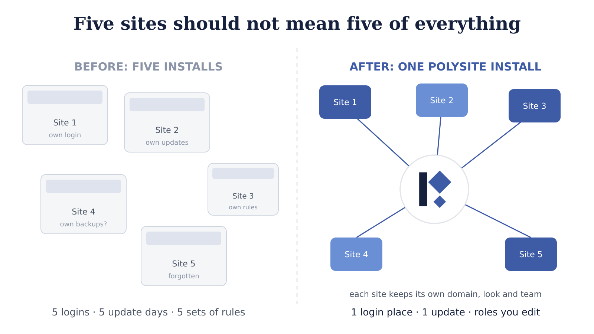
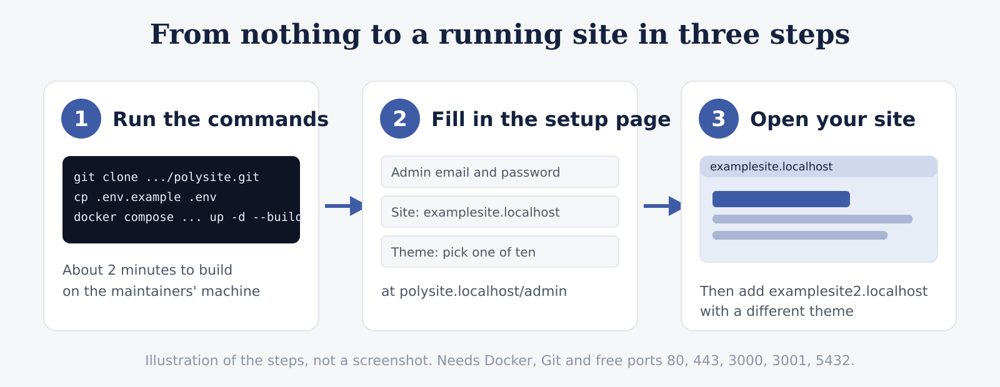
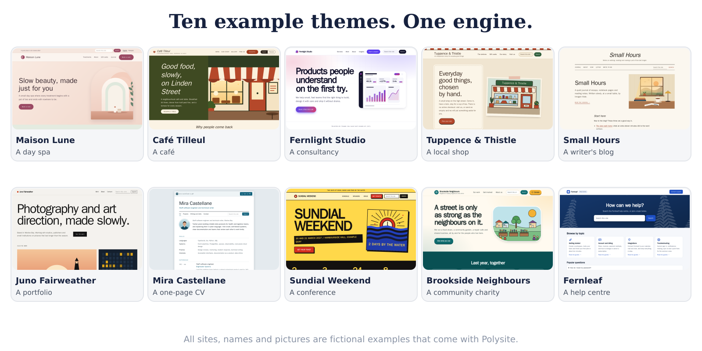
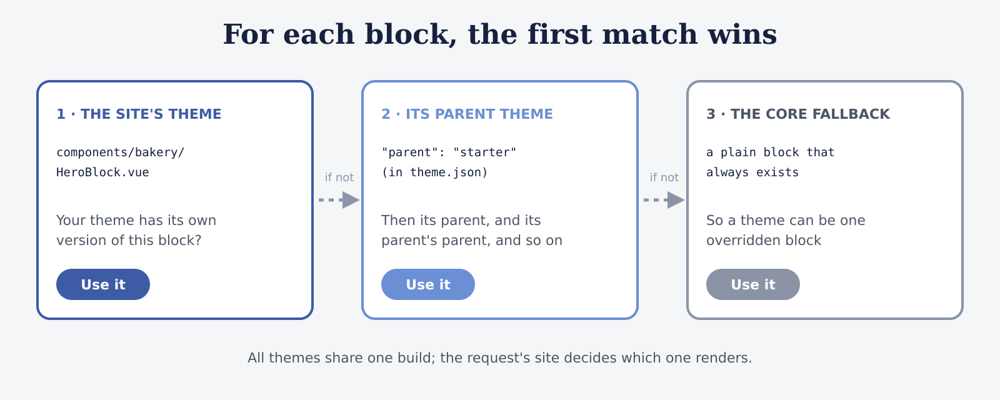
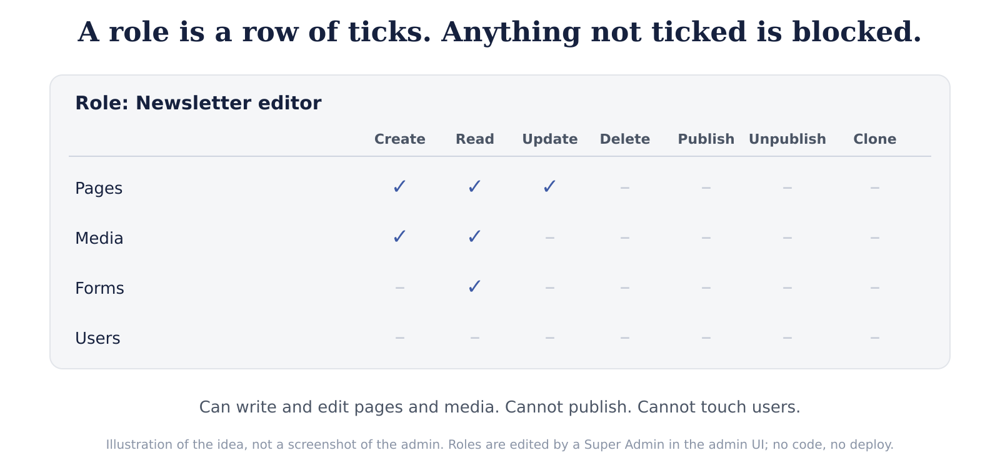
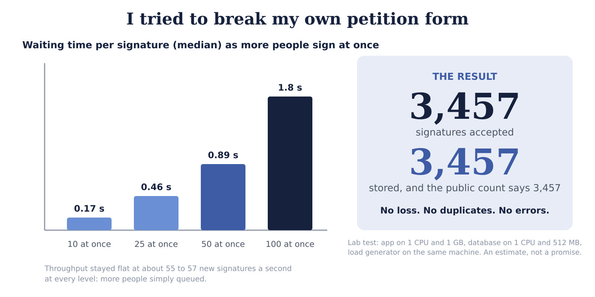
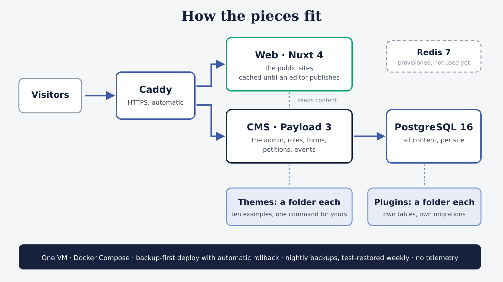

One install, ten very different websites
A hands-on tour of Polysite, a multi-site CMS: roles anyone can edit, themes that are just folders, a petition form I tried to break, and the real bugs worth stealing.
If your organisation runs more than one website, you already know the feeling. Five sites means five logins, five update days and five slightly different answers to “who is allowed to publish?”. Somebody leaves; their account stays. Somebody forgets a security update on the site nobody remembers owning.
I have spent a long time building an answer to that: Polysite, a CMS that runs many websites from one install. Each site keeps its own domain, look, content and team. An editor on one site cannot see or change another.
This article is a tour you can follow on your own computer. By the end you will have two sites with two completely different looks running from one install, and you will know how the roles, themes, petition forms and plugins work underneath. I will also share the five real bugs that taught me the most, because some of them will save you a day.
The idea in one picture

The idea has one rule: a site is a domain. A request arrives for a domain, and the domain decides which site you are looking at. Content, media and users belong to that site. Everything else (updates, backups, access rules, plugins) is shared and exists once.
Under the hood it is a Payload CMS 3 back end and a Nuxt 4 public site, with PostgreSQL, run with Docker Compose. You do not need to know any of that to follow the next section.
Try it yourself in about ten minutes
You need Docker (with Compose v2) and Git. Nothing else gets installed on your machine. Ports 80, 443, 3000, 3001 and 5432 need to be free, and you need about 5 GB of disk. This is the hot-reload development setup, so use a laptop or a throwaway server, not production.
git clone https://github.com/polysites/polysite.git && cd polysite
git clone https://github.com/polysites/polysite-themes.git themes
git clone https://github.com/polysites/polysite-plugins.git plugins
cp .env.example .env
docker compose -f docker-compose.yml -f docker-compose.dev.yml up -d --buildOn the maintainers’ Windows machine the build took about 110 seconds with nothing cached, and about 45 with cached layers.
Then open http://polysite.localhost/admin. On an empty
install the admin shows a setup page instead of a login:

- Create your administrator account. It becomes the Super Admin.
- Name your first site, give it the domain
examplesite.localhost, pick a theme and tick “create a starter home page”. - Open
http://examplesite.localhost. Your first site is live.
Browsers resolve *.localhost addresses on their own, so
there is nothing to configure. Now create a second site in the admin
(Sites, then Create) with the domain
examplesite2.localhost, pick a different theme, add a Home
page, and open it. Two sites, two looks, one install.
If you would rather start with fictional demo content,
docker compose exec cms npx payload run scripts/seedDevData.ts
loads it instead of the setup page. Do one or the other.
Ten looks, one engine
A site’s look in Polysite is a theme, and a theme is a folder: a Nuxt layer with a layout, one component per page block and a small stylesheet of design tokens. The core handles data, routing, SEO and caching, so a theme never has to.
Ten complete example themes come in the themes repository, each with fictional content and original artwork: a day spa, a café, a consultancy, a local shop, a writer’s blog, a portfolio, a CV, a one-weekend conference, a community charity and a help centre.

Every theme is part of the same Nuxt build, and the request’s site record picks which one renders. For each block on a page, Polysite uses the first component it finds:

That means a theme can be a complete copy of the starter, or a layout plus one overridden block that inherits everything else from a parent. Making your own takes one command:
themes/scripts/new-theme.sh bakery "Bakery"
docker compose restart web cmsOpen Sites in the admin, choose a site and set its Theme to Bakery. It looks like the starter and is yours to change. The whole structure is:
polysite-theme-bakery/
layouts/bakery.vue header, navigation, footer
components/bakery/*.vue the page blocks this theme draws
assets/css/bakery.css design tokens
theme.json label, optional parent“Who is allowed to publish?” in one minute
This is the feature people react to most. In Polysite, a role is data, not code. A Super Admin opens a screen, creates a role such as “Newsletter editor”, ticks which parts of the system it may touch (pages, media, forms) and which operations it has (create, read, update, delete, publish, unpublish, clone to another site), and saves. No developer, no deploy.

Two design decisions make this safe:
- Access fails closed. A missing role, module or operation always resolves to “deny”, never “allow”.
- One flag is deliberately not a role.
isSuperAdminis a plain flag on the user, checked first, so a misconfigured role can never lock everyone out or promote itself.
The editors’ side is just as plain. Pages are built from typed blocks (hero banners, text, FAQ accordions, feature grids, form embeds, donation tiers), with Live Preview at phone, tablet and desktop widths. Every page has Save draft and Publish changes, a version history you can compare and restore, scheduled publishing, and a “ready for review” marker.
I tried to break my own petition form
A petition site has one nightmare: it goes viral and falls over, or worse, loses signatures or counts one person six times. So I designed for it, and then I tried to break it.
One signature per person. Any form can become a petition with two settings. The key is an HMAC of the form and the normalised email address, protected by a unique index in the database. The index, not a look-up, is what stops two simultaneous requests from both being stored. Someone who signs twice sees the normal thank-you and nothing extra is stored, so the form cannot be used to find out who has signed. A public count and optional goal bar are cached for ten seconds, so a page thousands of people open at once costs one count query every few seconds.
The test. I gave the CMS 1 CPU and 1 GB, gave PostgreSQL 1 CPU and 512 MB, and ran the load generator on the same machine.

Throughput stayed at about 55 to 57 new signatures a second at every concurrency level (10, 25, 50, 100). More simultaneous signers did not go faster; they queued, which is what a saturated CPU looks like. And the number I care about most: 3,457 signatures accepted, 3,457 stored, public count 3,457. No loss, no duplicates, no errors. The CPU was the limit.
Put it in campaign terms: 1,000 to 10,000 signatures a day is under one a second on average, and 10,000 in three minutes is about 55 a second. That is why there is no queue in the design.
A caveat that matters: this was a lab test on one machine, with the load generator sharing it. Treat it as an estimate, and run it on your own server before a campaign. The script is in the repository and builds its own throwaway Docker project, so it does not touch your data:
git clone https://github.com/polysites/polysite.git && cd polysite
sh tests/load/run.shIt takes about ten minutes, mostly the build. I would love to hear your numbers.
Plugins that own their tables
Everything optional lives in plugins: news, search, several languages per site, events with RSVP and waiting lists, signed webhooks, share buttons, a WordPress importer and more. A plugin is a folder you drop in; the CMS finds it at boot.
The rule I am proudest of: removing a plugin never deletes what its users created. Each plugin keeps its data in its own tables with its own migrations, and a check in the project’s CI fails any migration that drops a table, column or type. That rule exists because I found three real ways a removed plugin could have destroyed data, so it is now enforced by machine, not by memory.
Under the hood

- Caddy terminates HTTPS and issues certificates automatically.
- Web is a Nuxt 4 app. Pages are rendered once, kept in a cache and rendered again only when an editor publishes a change.
- CMS is Payload 3 on Next.js, with the admin.
- PostgreSQL 16 holds everything. Redis is provisioned but not used yet.
- Operations are deliberately boring: one VM, Docker Compose, versioned images. A deploy script takes a backup first, runs migrations, switches one service at a time and rolls back by itself if a health check fails. Backups run nightly and are test-restored weekly. Polysite sends no telemetry; I checked with a packet capture.
Five real bugs worth stealing
The architecture guide in the repository keeps a Known Issues log of the real bugs hit while building. These five taught me the most.
1. access.read is not navigation
visibility. I once gated a collection’s read
access to hide a menu item for non-admin roles. It broke the entire
admin shell with a hard 500, because the multi-tenant plugin needs
scoped read access on sites to resolve tenants. Use
admin.hidden for what appears in the sidebar and leave real
access control alone.
2. Postgres ids lie about their type. In a Payload
access function, user.id can arrive as a number while the
function’s own id argument is a string for the same record.
A strict === fails silently, which looks exactly like
“access correctly denied” until you test with a real non-admin login.
Always compare String(a) === String(b).
3. A second theme exposes what the first hid. A
shared composable written with await before
useHead() worked with one theme and threw with two.
Tailwind’s source scanning skipped the theme layers entirely because
each one is a nested git repository, and later only covered the first
theme by name. Nothing showed these until a second theme existed. Test
layers with at least two.
4. The database adapter wraps your unique violation.
Payload’s Postgres adapter does not pass the raw unique-violation error
(23505) through. It throws its own
ValidationError whose message names the columns. My first
petition version only recognised the raw error and answered 500 on a
duplicate signature. A live test caught it, and now a unit test pins the
shape.
5. Deleting a plugin must be harmless. Without care, a site or role that still ticked a removed plugin’s module failed to save, and dev-mode schema pushes offered to drop the plugin’s tables. The fix was a rule, migrations that never delete, plus a check that enforces it.
How it was built
Polysite was built by me together with Claude, Anthropic’s AI coding assistant. I am saying so plainly because it matters to how you read the rest. The record of what was checked is the automated test suites (hundreds of unit tests), the real-stack checks, the load test above and the Known Issues log, not my say-so. I would rather you read them than trust either of us.
Where it stands
Polysite is in beta. It is source-available, not open source: free to use and modify for your own organisation’s sites, and building or hosting sites for clients for a fee needs a separate agreement. Because the deploy and release tooling is new, try it on a throwaway server before anything important, and take your own backup before upgrading. There has not been an independent security review yet.
Try it, break it, tell me
- Docs: polysites.github.io/polysite
- Code: github.com/polysites/polysite (with themes and plugins alongside)
- Landing page: polysites.github.io
Three things I would love to hear: which example theme you would restyle first; what your load-test number was; and whether “every plugin owns its tables and migrations” sounds sane to you or like a trap. Write to me at me@iamharshdoshi.com.
If you are not technical and just want to know whether this could work for your organisation’s sites, write to me too and I will walk you through it, no obligation.